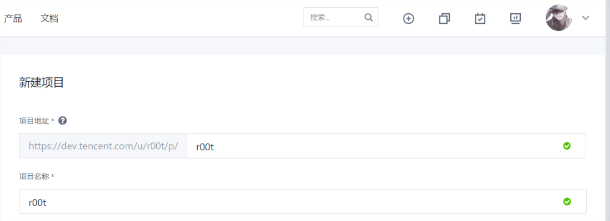
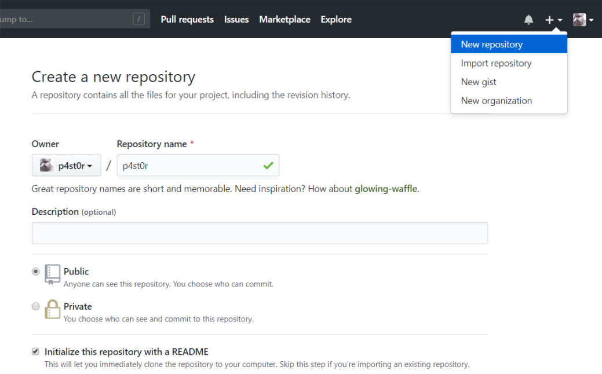
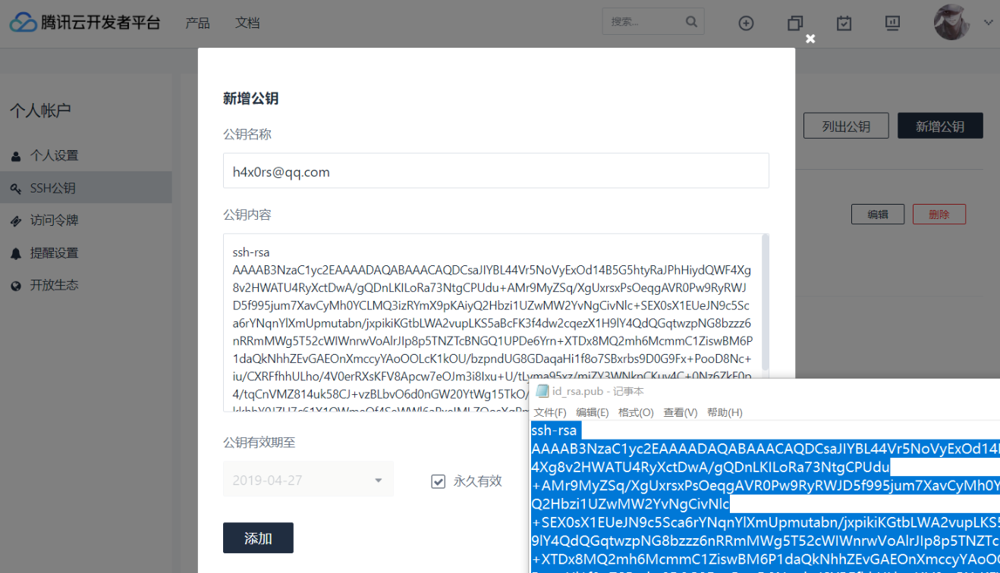
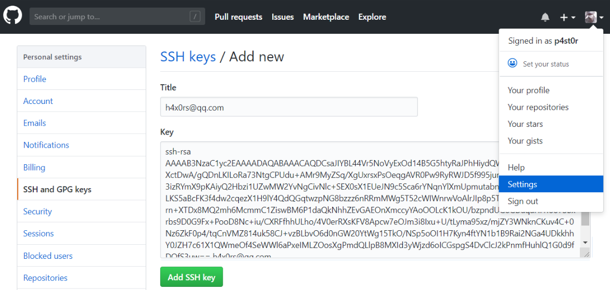

建议大家耐心看到底，本文注重实用性，不会过多的深究原理，目的在于提供一个可执行的博客搭建方案给大家。
前言
大致流程：
[1] 配置环境：Node.js/Git
[2] 本地搭建/完善
[3] 安装主题 (可略)
[4] 部署至 Coding/Github
[5] 成果展示
[6] Hexo指令 (包括创建文章等)
[7] 闲言碎语 & 参考文章
环境准备
这里作者本人使用的是Windows 10 / 64位，以下内容仅供Windows用户参考。
安装Git
两种方式
[1] Git官网下载
[2] 从管理软件里下载，然后再更新
在cmd中查看git版本
1 | C:\Users\p4st0r>git --version |
安装Node.js
两种方式
[1] Node.js官网下载
[2] 从管理软件里下载，然后再更新
在cmd中查看node.js版本
1 | C:\Users\p4st0r>node -v |
本地搭建
在Git Bash中切换到C:\Users\p4st0r目录。然后分别输入下面指令
(使用这个目录的原因是打开cmd后就是这个目录，方便以后推送更新)
1 | npm install hexo-cli -g |
在执行完hexo s后，如果出现以下内容则表示本地搭建成功[√]
1 | C:\Users\p4st0r\Hexo>hexo s |
安装主题
我的博客选择的是Aecher主题，我博客的最下面也有显示使用的主题。
安装
(其实Github上就有指导，但是为了大家方便就复制过来了，在此谨作演示，不做它用。)
[1] 在Hexo目录执行
1 | npm i hexo-generator-json-content --save && npm i --save hexo-wordcount && git clone https://github.com/fi3ework/hexo-theme-archer.git themes/archer --depth=1 |
[2] 修改Hexo目录下的_config.yml的theme字段为archer
1 | theme: archer |
[3] 添加sidebar侧边栏启用支持
在Hexo目录下的_config.yml中添加以下字段（不是archer下的_config.yml）
1 | jsonContent: |
侧边栏完善
这里有个关于侧边栏的小问题，展开后要点击空白部分才能收起来。这里请参考#142 Issues。而我的做法也是非常简单除暴的，将所有相关文件代码下载后直接替换即可。
主题拓展
官方Wiki
更多主题拓展请查看官方文档
自定义文章摘要
首页的摘要有三种形式，优先级依次递减，高优先级会屏蔽掉低优先级的摘要。
[1]使用 hexo 的
在文章中插入 <!-- more --> 分隔符，分隔符之前的会显示在首页
[2]自定义摘要
可以在文章的 meta 中定义 abstract 字段来自定义该文章在首页显示的摘要。
1 | title: Tags |
[3]默认摘要
默认摘要会截取文章的前 300 个字符，可以在配置中修改。
启用字数统计及阅读时间
[1]hexo 目录下执行
1 | npm i --save hexo-wordcount |
[2]在 archer 的配置中
1 | reading_info: true |
开始部署
这部分坑比较多，笔者也不可能将本文做的尽善尽美。希望读者们遇到问题时可以自主动手寻找答案，也欢迎大家与我一同交流，首页有我的联系方式。
创建项目
Coding部分
我们首先在Coding上新建项目：
[1]项目名称输入自己的用户名(当时作者在这里被坑惨了= =|||)
[2]启用 README.md 文件初始化项目。其他的默认直接新建项目即可。
[3]</>代码->代码浏览->右上角选则SSH并复制仓库地址。
Github部分
这里大致流程与Coding部分类似，目的在于创建一个Git仓库并获取它的地址
[1]Create a new repository
[2]Repository name要设置为用户名.github.io(和上面一样也是一个坑= =|||)
[3]这里仓库选择Public，因为Private好像要收钱
[4]选择Initialize this repository with a README[√]
[5]进入仓库->Clone or download->选则SSH并复制仓库地址。
修改本地Hexo/_config.yml文件
_config.yml是Hexo目录下的，而且不是主题下的。
因为我们打算同时部署到Coding / Github上，所以配置如下，这里Coding / Github就可以填上我们刚才获取的SSH仓库地址。
1 | deploy: |
注意三点：[1] 输入分号:时要使用英文半角; [2]而且:后要留有一个空格; [3]注意缩进。
生成公钥
这里我们需要生成SSH公钥，并且在平台上正确配置，以便于把本地博客文件传输到平台上创建的git仓库
打开命令行终端输入ssh-keygen -m PEM -t rsa -b 4096 -C "your.email@example.com"，连续Enter即可。
1 | ssh-keygen -m PEM -t rsa -b 4096 -C "your.email@example.com" |
添加公钥
这里我们选择配置账户公钥，而不选择部署公钥，目的是为了方便以后推送代码。
1 | 部署公钥默认拥有该项目的只读权限，如果需要获取推送权限，请勾选部署公钥设置里的「授予推送权限」 |
首先查看目录C:Users\用户名\.ssh，用文本编辑器打开「id_rsa.pub」文件，复制全部内容。
Coding部分
[1]登录 Coding.net，进入「账户 -> SSH 公钥」页面，点击「新增公钥」。
[2]将第一步中复制的内容填写到「公钥内容」一栏，公钥名称可随意填写。
[3]设定公钥有效期，也可以为了方便选择永久有效。
Github部分
[1]登录Github.com，然后Settings->SSH and GPG keys->New SSH key->
[2]把「id_rsa.pub」里的内容复制进去，title就填自己的邮箱。->Add SSH key即可
建立连接
Coding部分
输入ssh -T git@e.coding.net
首次建立链接会要求信任主机，像笔者我的就已经建立好了
1 | Coding 提示: Hello r00t, You've connected to Coding.net via SSH. This is a personal key. |
Github部分
同理输入ssh -T git@github.com
出现类似以下类似提示，就表明我们已经成功建立链接。
1 | Hi SewageFish/SewageFish.github.io! You've successfully authenticated, but GitHub does not provide shell access. |
成果展示
[1]在Coding里打开Pages服务，打开访问地址即可(如我的就是r00t.coding.me)
[2]Github就直接打开，用户名.github.io(如我的就是sewagefish.github.io)
域名绑定
Coding部分
[1]在Coding里设置：Pages服务->设置->绑定新域名->强制 HTTPS 访问
[2]在域名解析设置：主机记录@->记录类型CNAME->记录值 用户名.coding.me
Github部分
[1]在cmd里操作ping你Github博客地址(username.github.io)获取IP地址
1 | C:\Users\p4st0r>ping username.github.io |
[2]在Github里设置：Github仓库地址->Creat new file->填入文件名CNAME->内容填上你的域名
[3]在Github里设置：Github仓库->Settings->GitHub Pages->Custom domain->Enforce HTTPS
[4]在域名解析里设置：主机记录www->记录类型A->记录值 IP地址
Hexo常用指令
1 | hexo g #用以修改md文档后生成新文件 |
个人总结
这篇文章是笔者的首篇文章，前前后后踩了不少的坑，由于个人能力有限，笔者也没有办法把所有问题的解决方案完全呈现出来，不过打完这篇文章确实蛮有成就感的2333。好吧，从今后起就干劲满满的写博客吧！
参考文章
[1] Hexo官网
[2] 独行喵 / Git与Github的连接与使用
[3] Coding Help / 配置SSH公钥访问git仓库
[4] pengloo53 / Hexo部署至多个repo上，多域名指向
[5] Jiayu’s Blog / 使用coding和hexo快速搭建博客
[6] Hexo主题 / hexo-theme-archer
[7] start逍遥 / Github博客绑定域名